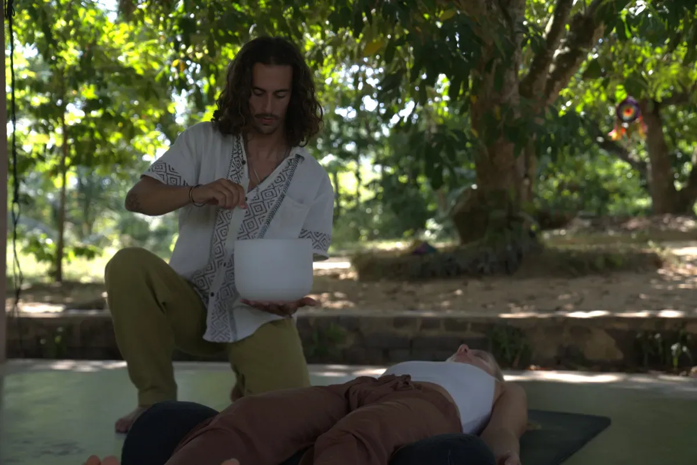

Breathwork y
baños de sonido
en Valencia
Sesiones para calmar la mente, soltar lo que pesa y volver a tu centro. Sin poses. Sin atajos.
Sesiones para volver al equilibrio.
Durante años viví desconectado de mi cuerpo y de mi mismo. Ese camino de búsqueda me llevó al sonido, la presencia y la escucha profunda.
Hoy acompaño a personas que, como yo, están en un momento de cambio. Trabajo con sonido y respiración para liberar tensión y reconectar con tu presencia.
Conoce más sobre mí →Cuatro formas de volver a ti.
Elige la que necesitas ahora.

Baño de sonido
Relajación profunda, vibración sanadora, presencia. Gong, cuencos y armónicos para calmar el sistema nervioso.
Saber más →Breathwork
Respiración consciente para liberar tensión, claridad mental y desbloqueo emocional.
Saber más →
Masaje vibracional
Tu cuerpo libera lo que la mente no puede.
Saber más →Círculos de hombres
Un espacio para bajar la máscara, hablar verdad y caminar acompañado. Presencia, escucha y tribu.
Saber más →Así lo viven.
La sesión con Ram estuvo hermosa. El transmitió sus conocimientos y su profundidad de una forma muy simple y cercana. Y el sonido del gong fue algo maravilloso. Muy recomendable la experiencia para frenar un poco el ruido externo y navegar dentro de nuestra aguita interna.
La sesión de baño de sonido ha sido una gran experiencia que recomiendo mucho. Ramón crea un ambiente cálido y de confianza, lo que facilita relajarse y conectarse con uno mismo. Una gran forma de cerrar la semana.
Fue increíble como conecta con los instrumentos y te transforman las vibraciones.
Fui a una sesión de baño sonoro sin saber muy bien qué esperar y salí completamente relajada. Una experiencia muy especial que recomiendo a todo el mundo.
Ram guió una sesión muy muy completa y preparada con mucho amor.
He asistido a una sesion de Breathwork y Baño de sonido y ha estado increible. La energia de Ram durante toda la sesion me ha hecho sentir muy bien. Gracias!
Me gustó mucho la sesión. El ambiente era muy acogedor. La parte de breathwork fue interesante y el baño de sonido, con diferentes instrumentos como el handpan, resultó muy relajante. Lo disfruté mucho y sin duda lo recomiendo para desconectar del estrés diario.
Las sesiones de Ram son exelentes. La sesion de breathwork estuvo guiada de manera profesional y el baño sonoro de gong fue demasiado relajante.
La sesión con Ram estuvo hermosa. El transmitió sus conocimientos y su profundidad de una forma muy simple y cercana. Y el sonido del gong fue algo maravilloso. Muy recomendable la experiencia para frenar un poco el ruido externo y navegar dentro de nuestra aguita interna.
La sesión de baño de sonido ha sido una gran experiencia que recomiendo mucho. Ramón crea un ambiente cálido y de confianza, lo que facilita relajarse y conectarse con uno mismo. Una gran forma de cerrar la semana.
Fue increíble como conecta con los instrumentos y te transforman las vibraciones.
Fui a una sesión de baño sonoro sin saber muy bien qué esperar y salí completamente relajada. Una experiencia muy especial que recomiendo a todo el mundo.
Ram guió una sesión muy muy completa y preparada con mucho amor.
He asistido a una sesion de Breathwork y Baño de sonido y ha estado increible. La energia de Ram durante toda la sesion me ha hecho sentir muy bien. Gracias!
Me gustó mucho la sesión. El ambiente era muy acogedor. La parte de breathwork fue interesante y el baño de sonido, con diferentes instrumentos como el handpan, resultó muy relajante. Lo disfruté mucho y sin duda lo recomiendo para desconectar del estrés diario.
Las sesiones de Ram son exelentes. La sesion de breathwork estuvo guiada de manera profesional y el baño sonoro de gong fue demasiado relajante.
¿Dónde encontrarme?
Sesiones presenciales en Valencia y encuentros puntuales.
Sígueme en Instagram
Lo que no cabe en una sesión.
Hablemos.
Si es el momento, escríbeme. Sin compromiso.
Escribir por WhatsApp